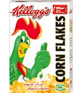
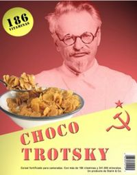
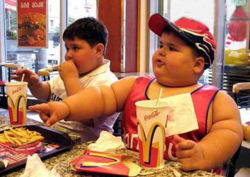

Cereal
 De: La Frikipedia, la enciclopedia extremadamente seria.
De: La Frikipedia, la enciclopedia extremadamente seria.

Caja de cereal saliendo de la alacena
Se le llama cereal a cualquier caja con premio adentro, elemento(s) tóxicos de la tabla periódica con Trigo, cebada, avena, arroz, Hagua, caca o cocaina en un mismo alimento, o inductor de hiperactividad infantil (es decir embarazos no deseados)
Modo de preparación Composición
Varía dependiendo del cereal que hablemos... existen desde los cereales de pueblo honrable (como los puffets) hasta los más modificados geneticamente, quimicamente, politicamente, biologicamente y estúpidamente (un ejemplo son las Zurraditas)
Cereales de pueblo honrable tienen una composición compleja descrita a continuacion:
- 90% Maíz, trigo, cebada o arroz molido, hecho caquita y amasado.
- 7% de Azúcar pura de caña (no de piñata) negra o estandar
- 3% de Mugre por las manos, pies,
pollas o extremidades que lo tocaron, guardaron, empaquetaron, exportaron, comieron, vomitaron en la caja, la devolvieron a servicio al cliente, la secaron, hicieron trozos el vomito y revendieron casualmente a tí.
Los cereales con elemento(s) tóxicos de la tabla periódica con Trigo, cebada, avena, arroz, Hagua, caca o cocaina tienen una composición sencilla compleja descrita ahorita:
- 1% Cereal de avena, trigo, maíz, cebada o arroz molido, hecho caquita y amasado.
- 2% de Tungsteno
- 1% de Teletubio
- 7% de Iracundo
- 15% de Heliocoptero (y tu te preguntas por que los cereales te provocaban gases)
- 4% de Caca
- 9% de Puterio
- 11% de Yankeerio (elemento mortal para cualquiera)
- 48% de Azúcar industrial geneticamente modificada pa que brilles en la oscuridad seguido de una epilepsia
- 2% de mugre
- 1% de orina de gato
Tipos de cereales creados por el hombre
 El cereal con menos indice de mortandad en américa latína (no por que sea barato) por ser insipido, incoloro, inodoro, incagable, inaceptable, inbécil (si dije inbécil algún pedo?) e in
IP anónima Los creados fielmente para la nutrición de los niños de mexico en europa son:
Estos cereales contiénen un bajo indice de embarazos no deseados y epilepsia, pues su unica composicion es mugre, azucar y cereal.
Tipos de cereales creados por bactérias mutantes de laboratorio y manipulados por tíos con guantes de látex y batas blancas
Los creados por el nombre con el apartado más grande de este artículo (y quizas de la Frikipedia):
Y tu creías que no... HA!
- Zurraditas: descrita por los nutriologos como la muerte misma, el asesíno es un tigre naranja (ajiu ajiu ajiu) con un paliacate azul llamado António Arellano Félix alias El Tigre Toño.
- Chocapic:copia barata del Chococrispixxx pero con el mismo índice de mortandad a causa de la cocaína de entre los primeros 80 elementos de la tabla periodica (en ese orden)
- Chococrispixxx: indice de mortandad elevado por la ampolleta sabor chocolate con sida dentro de cada 3 empaques
- Paken Flakes: el preferido por las bulímicas, su nombre causa mortandad debido a la bactéria IP anónimaus Cagablis, que se alimenta de tus proteínas y tus artículos de la Frikipedia
La única cura a este cereal es esta...
- Popscorn o Corn Pops: Revienta cabezas en español, este cereal si lo comes y sales a la intemperie con una temperatura mayor a los 30° explotas
- Lacagadisima Flakes: Cereal con mierda en vez de chocolate.
 La peor inversión rusa despues del incidente en Tunguska...
- Chocotrotksky: Cereal radioactivo, ruso importado, estúpido, Kentuchi Frien Chicken, IP anónimafílico y tartamudo del mundo, el más mortal, contiene 186 vitaminas y mi
nerdales de las cuales solo el cuerpo reconoce 180, creado por el Señor Trotsky desde la cripta... te espera un invierno nuclear intestinal si lo ingieres, seguido de un incidente con un meteorito de mierda intestinal como en tunguska
Los premios de las cajas:
A continuación se mencionaran los premiso que han existido desde que este holocausto ofício gastronómico ha existido:
- El Santo'Os: Una tarjeta coleccionable tridimensional, fosforecente y velada de la fotografía de la cara del Santo.
- Nezahual Flakes: Un billete de 100 pesos.
- ALL-BRAN: Foto de tu abuela tirandose a un caballo para que se te salga la mierda al instante.
- Pelón del grito de la independencia-BRAN: Te dan una campanita que casualmente tiene la circunferencia de tu ano... es para el estreñimiento, la haces sonar y se te desprende todo de la pared intestinal.
- Cagaditas: Un digimon que parece una caca enrollada
- Zurraditas: Un Obituario con todo pagado en el Hispano Mexicano,
- Chocapic: Un porro gratis
- Chococrispixxx: Además de la ampolleta sabor chocolate con sida... te regalan un condón usado con sífilis
- Pops Corn: Un cabezón de los de la coca-cola
- Chocotrotsky: Una cabeza nuclear, un tanque de juguete con balas reales, una lancer con motosierra y u truño nuclear con lucecitas.
 Un niño que comio Corn Pops estando a una temperatura de 38°... 3...2...1... Felíz vida nueva!!!!

CARAJO... ¿NO ES ADORABLE?
Entre los otros regalos existentes esta el KeyGen del Loquendo con la voz de Jorge, el Internet Download Manager con 30 días de uso, un disco de la revista HENTAI™ Y un condón Trojan (si tu condón es dorado ganas una noche con 3 travestis muy bien disfrazadas)
Sabías que?

ESTREÑIMIENTO (FALTA DE ALL-BRAN)
NO MAMES... NO SALE NI CON DESTAPADOR DE INODOROS (SIN COMER ALL-BRAN)
- ... Acabo de cenar Pop corns?
- ... pero de 6:00 PM a 10:00 AM estamos a 14° Celcius?
- ... De seguro ya te comiste 20 ampolletas con SIDA?
- ... Los chocotrotsky se los comió Metállica?
- ... Por eso se vinieron con el video ALL NIGHTMARE LONG?
- ... y tuvieron un holocausto intestinal por la lancer?
- ... estas buscando el condón dorado?
- ... Lo adivine porque tengo más poderes psiquicos que IP anónima?
- ... Soy un diós antiguo con nombre mortal irlandés?
- ... Me han caido mal las zurraditas?
- ... Recibiré en 3 segundos una llamada del Tigre Antonio Arellano Félix diciendome que moriré en el inodoro en 7 días?
- ... Tengo más de 7GB de hentai en mi ordenador?
- ... Este artículo va a ganar el certamen de adopción por el tío que no come ALL-BRAN?
Citas de los cereales...
Diós... un cereal que habla...
MALDÍTOS CHOCOTROTSKY... UUUHHHHH!
« "(Sonido de una caja de cereal, siguiendo a un plato, se llena el plato con cereal y se escuchan las hojuelas, se abre el cartón de leche y se vierte en el plato glu glu glu... se agarra una cuchara clinc clinc clinc... se cierra el plastico chrururu chrururu y se cierra la caja pfff»
~ Vida cotidiana de un cereal
«Pfffffrrrrrrrzzzzzzzzplank... ohh shit!!!!!!!»
~ Tío mezclando cereales honrados con químicos, papas sabritas, coca-cola, leche, truño, cerote, mugre y un moco de tu abuela
«Plock... ohhhh yes!»
~ Tío que si comio ALL-BRAN o Pelón del Grito de la independencia-BRAN
Autor(es):
- Alex2610
- Roms
- M26
- Cibercrank
- Mierdashi
- E1324
- Kevrochi
- Harry El del Pote
Frikipedia 2005-2016, Licencia
GFDL 1.2 - Extraído por FrikiLeaks